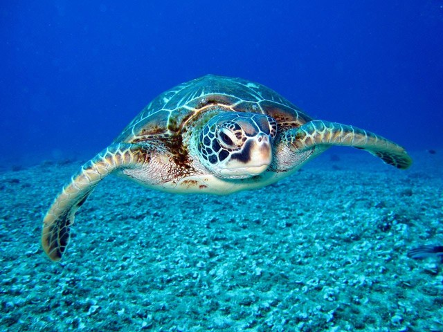

Penyu adalah hewan yang banyak ditemukan bertelur di beberapa pesisir pantai di Indonesia sejak dahulu.

Ubur-ubur adalah sejenis binatang laut tak bertulang belakang yang termasuk dalam filum Cnidaria